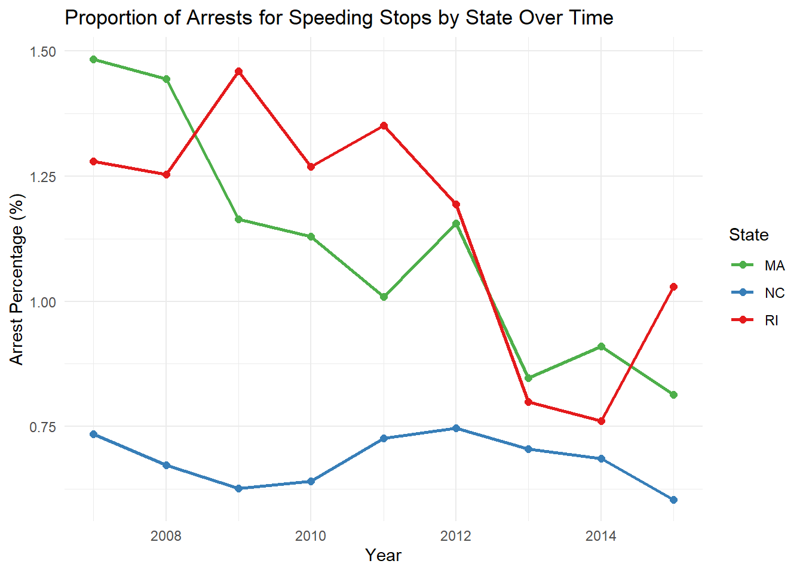
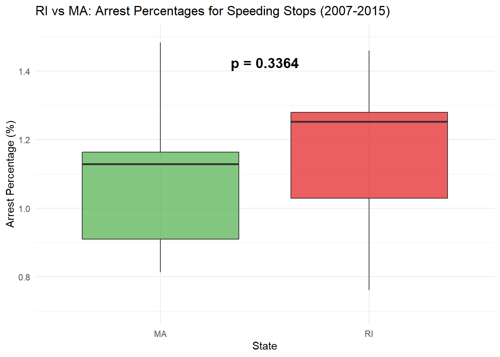
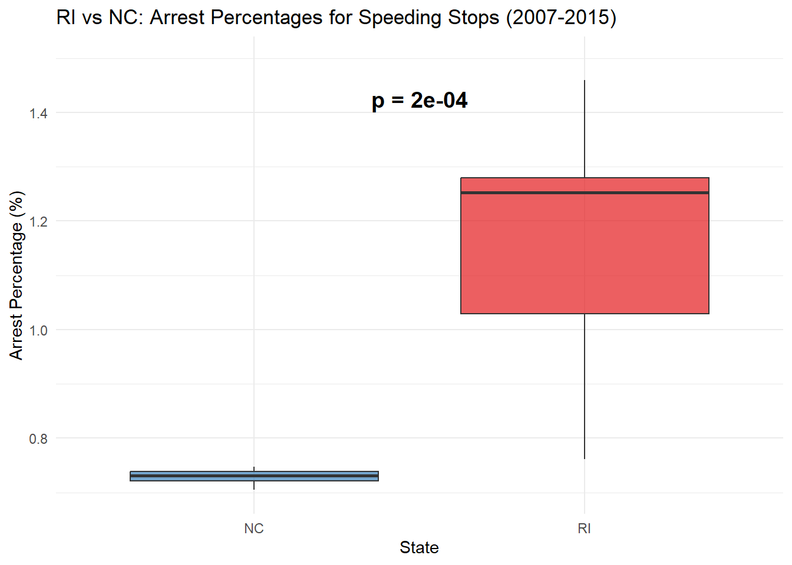

Show the code
#load libraries
library(tidyverse)
library(RMariaDB)
library(ggplot2)
library(gt)Analysis of traffic stops data compiled by the Stanford Open Policing Project.
Currently, a comprehensive, national repository detailing interactions between police and the public doesn’t exist. That’s why the Stanford Open Policing Project is collecting and standardizing data on vehicle and pedestrian stops from law enforcement departments across the country — and they’re making that information freely available. they’ve already gathered over 200 million records from dozens of state and local police departments across the country.
Timeo Coletta
October 5, 2025
Sources linked:
Pierson, Emma, Camelia Simoiu, Jan Overgoor, Sam Corbett-Davies, Daniel Jenson, Amy Shoemaker, Vignesh Ramachandran, et al. 2020. “A Large-Scale Analysis of Racial Disparities in Police Stops Across the United States.” Nature Human Behaviour, 1–10 Paper Link
In my analysis, I work with tables containing data on traffic stops made by state patrols in Rhode Island, North Carolina, and Massachusetts. Specifically, I examine whether there are differences across states in the proportion of arrests made during traffic stops with speeding as the stated reason for the stop. I consider the time period from 2007 to 2015, as the data tables overlap over this time frame. I have hidden the output of the queries below, as they are useful if one wants to visualize the contents of each data table but don’t involve any important wrangling. I hypothesize that Rhode Island has a higher proportion of arrests made for speeding stops than the two other states given its higher population density, which I infer makes for stricter speeding laws. I expect the difference to be smaller between Rhode Island and Massachusetts, given that the difference in their population density is very small.
| Tables_in_traffic |
|---|
| ar_little_rock_2020_04_01 |
| az_gilbert_2020_04_01 |
| az_mesa_2023_01_26 |
| az_statewide_2020_04_01 |
| ca_anaheim_2020_04_01 |
| ca_bakersfield_2020_04_01 |
| ca_long_beach_2020_04_01 |
| ca_los_angeles_2020_04_01 |
| ca_oakland_2020_04_01 |
| ca_san_bernardino_2020_04_01 |
| reason_for_stop |
|---|
| Speeding |
| Other Traffic Violation |
| Equipment/Inspection Violation |
| Motorist Assist/Courtesy |
| Registration Violation |
| Call for Service |
| NA |
| Violation of City/Town Ordinance |
| Special Detail/Directed Patrol |
| APB |
| raw_row_number | date | time | zone | subject_race | subject_sex | department_id | type | arrest_made | citation_issued | warning_issued | outcome | contraband_found | contraband_drugs | contraband_weapons | contraband_alcohol | contraband_other | frisk_performed | search_conducted | search_basis | reason_for_search | reason_for_stop | vehicle_make | vehicle_model | raw_BasisForStop | raw_OperatorRace | raw_OperatorSex | raw_ResultOfStop | raw_SearchResultOne | raw_SearchResultTwo | raw_SearchResultThree |
|---|---|---|---|---|---|---|---|---|---|---|---|---|---|---|---|---|---|---|---|---|---|---|---|---|---|---|---|---|---|---|
| 1 | 2005-11-22 | 11:15:00 | X3 | white | male | 200 | vehicular | 0 | 1 | 0 | citation | NA | NA | NA | NA | NA | 0 | 0 | NA | NA | Speeding | NA | NA | SP | W | M | M | NA | NA | NA |
| 2 | 2005-10-01 | 12:20:00 | X3 | white | male | 200 | vehicular | 0 | 1 | 0 | citation | NA | NA | NA | NA | NA | 0 | 0 | NA | NA | Speeding | NA | NA | SP | W | M | M | NA | NA | NA |
| 3 | 2005-10-01 | 12:30:00 | X3 | white | female | 200 | vehicular | 0 | 1 | 0 | citation | NA | NA | NA | NA | NA | 0 | 0 | NA | NA | Speeding | NA | NA | SP | W | F | M | NA | NA | NA |
| 4 | 2005-10-01 | 12:50:00 | X3 | white | male | 200 | vehicular | 0 | 1 | 0 | citation | NA | NA | NA | NA | NA | 0 | 0 | NA | NA | Speeding | NA | NA | SP | W | M | M | NA | NA | NA |
| 5 | 2005-10-01 | 13:10:00 | X3 | white | female | 200 | vehicular | 0 | 1 | 0 | citation | NA | NA | NA | NA | NA | 0 | 0 | NA | NA | Speeding | NA | NA | SP | W | F | M | NA | NA | NA |
| 6 | 2005-10-01 | 15:50:00 | X3 | white | male | 200 | vehicular | 0 | 1 | 0 | citation | NA | NA | NA | NA | NA | 0 | 0 | NA | NA | Other Traffic Violation | NA | NA | OT | W | M | M | NA | NA | NA |
| 7 | 2005-09-11 | 11:45:00 | X3 | white | male | 200 | vehicular | 0 | 1 | 0 | citation | NA | NA | NA | NA | NA | 0 | 0 | NA | NA | Speeding | NA | NA | SP | W | M | M | NA | NA | NA |
| 8 | 2005-09-11 | 11:45:00 | X3 | white | female | 200 | vehicular | 0 | 1 | 0 | citation | NA | NA | NA | NA | NA | 0 | 0 | NA | NA | Speeding | NA | NA | SP | W | F | M | NA | NA | NA |
| 9 | 2005-10-04 | 11:55:00 | X3 | hispanic | male | 200 | vehicular | 0 | 1 | 0 | citation | NA | NA | NA | NA | NA | 0 | 0 | NA | NA | Speeding | NA | NA | SP | H | M | M | NA | NA | NA |
| 10 | 2005-10-04 | 11:55:00 | X3 | white | male | 200 | vehicular | 0 | 1 | 0 | citation | NA | NA | NA | NA | NA | 0 | 0 | NA | NA | Speeding | NA | NA | SP | W | M | M | NA | NA | NA |
| reason_for_stop |
|---|
| Speed Limit Violation |
| Other Motor Vehicle Violation |
| Vehicle Regulatory Violation |
| Investigation |
| Seat Belt Violation |
| Safe Movement Violation |
| Vehicle Equipment Violation |
| Stop Light/Sign Violation |
| Driving While Impaired |
| Checkpoint |
| raw_row_number | date | time | location | county_name | subject_age | subject_race | subject_sex | officer_id_hash | department_name | type | arrest_made | citation_issued | warning_issued | outcome | contraband_found | contraband_drugs | contraband_weapons | frisk_performed | search_conducted | search_person | search_vehicle | search_basis | reason_for_frisk | reason_for_search | reason_for_stop | raw_Ethnicity | raw_Race | raw_action_description |
|---|---|---|---|---|---|---|---|---|---|---|---|---|---|---|---|---|---|---|---|---|---|---|---|---|---|---|---|---|
| 1 | 2000-05-22 | 21:10:00 | Unknown | NA | 45 | white | male | 22e35044ed | NC Division of Motor Vehicles, License and Theft Bureau | vehicular | 0 | 1 | 0 | citation | NA | NA | NA | 0 | 0 | 0 | 0 | NA | NA | NA | Speed Limit Violation | N | W | Citation Issued |
| 2 | 2000-01-03 | 07:52:00 | Unknown | NA | 20 | white | male | 22e35044ed | NC Division of Motor Vehicles, License and Theft Bureau | vehicular | 0 | 1 | 0 | citation | NA | NA | NA | 0 | 0 | 0 | 0 | NA | NA | NA | Other Motor Vehicle Violation | N | W | Citation Issued |
| 3 | 2000-01-06 | 10:30:00 | Unknown | NA | 23 | hispanic | male | 22e35044ed | NC Division of Motor Vehicles, License and Theft Bureau | vehicular | 0 | 0 | 1 | warning | NA | NA | NA | 0 | 0 | 0 | 0 | NA | NA | NA | Speed Limit Violation | H | U | Written Warning |
| 4 | 2000-01-06 | 14:50:00 | Unknown | NA | 60 | white | male | 22e35044ed | NC Division of Motor Vehicles, License and Theft Bureau | vehicular | 0 | 1 | 0 | citation | NA | NA | NA | 0 | 0 | 0 | 0 | NA | NA | NA | Vehicle Regulatory Violation | N | W | Citation Issued |
| 5 | 2000-01-06 | 14:50:00 | Unknown | NA | 27 | white | male | 22e35044ed | NC Division of Motor Vehicles, License and Theft Bureau | vehicular | 0 | 1 | 0 | citation | NA | NA | NA | 0 | 0 | 0 | 0 | NA | NA | NA | Vehicle Regulatory Violation | N | W | Citation Issued |
| 6 | 2000-01-04 | 15:40:00 | Unknown | NA | 54 | white | male | 22e35044ed | NC Division of Motor Vehicles, License and Theft Bureau | vehicular | 0 | 1 | 0 | citation | NA | NA | NA | 0 | 0 | 0 | 0 | NA | NA | NA | Speed Limit Violation | N | W | Citation Issued |
| 7 | 2000-01-05 | 09:40:00 | Unknown | NA | 36 | black | male | 22e35044ed | NC Division of Motor Vehicles, License and Theft Bureau | vehicular | 0 | 1 | 0 | citation | 0 | 0 | 0 | 0 | 1 | 0 | 1 | consent | NA | Erratic/Suspicious Behavior | Speed Limit Violation | N | B | Citation Issued |
| 8 | 2000-01-05 | 10:20:00 | Unknown | NA | 54 | white | male | 22e35044ed | NC Division of Motor Vehicles, License and Theft Bureau | vehicular | 0 | 0 | 0 | NA | 0 | 0 | 0 | 0 | 1 | 1 | 1 | consent | NA | Other Official Information | Investigation | N | W | No Action Taken |
| 9 | 2000-01-05 | 10:45:00 | Unknown | NA | 51 | white | male | 22e35044ed | NC Division of Motor Vehicles, License and Theft Bureau | vehicular | 0 | 0 | 0 | NA | 0 | 0 | 0 | 0 | 1 | 0 | 1 | consent | NA | Other Official Information | Investigation | N | W | No Action Taken |
| 10 | 2000-01-05 | 12:34:00 | Unknown | NA | 33 | white | male | 22e35044ed | NC Division of Motor Vehicles, License and Theft Bureau | vehicular | 0 | 1 | 0 | citation | 1 | 1 | 0 | 0 | 1 | 1 | 1 | consent | NA | Erratic/Suspicious Behavior | Speed Limit Violation | N | W | Citation Issued |
| reason_for_stop |
|---|
| Speed |
| NA |
| SeatBelt |
| Speed,SeatBelt |
| Speed,SeatBelt,ChildRest |
| ChildRest |
| Speed,ChildRest |
| SeatBelt,ChildRest |
| raw_row_number | date | location | county_name | subject_age | subject_race | subject_sex | type | arrest_made | citation_issued | warning_issued | outcome | contraband_found | contraband_drugs | contraband_weapons | contraband_alcohol | contraband_other | frisk_performed | search_conducted | search_basis | reason_for_stop | vehicle_type | vehicle_registration_state | raw_Race |
|---|---|---|---|---|---|---|---|---|---|---|---|---|---|---|---|---|---|---|---|---|---|---|---|
| 1 | 2007-06-06 | MIDDLEBOROUGH | Plymouth County | 33 | white | male | vehicular | 0 | 1 | 0 | citation | NA | NA | NA | 0 | NA | NA | 0 | NA | Speed | Passenger | MA | White |
| 2 | 2007-06-07 | SEEKONK | Bristol County | 36 | white | male | vehicular | 0 | 0 | 1 | warning | 0 | 0 | 0 | 0 | 0 | 0 | 1 | other | NA | Commercial | MA | White |
| 3 | 2007-06-07 | MEDFORD | Middlesex County | 56 | white | female | vehicular | 0 | 0 | 1 | warning | NA | NA | NA | 0 | NA | NA | 0 | NA | NA | Passenger | MA | White |
| 4 | 2007-06-07 | MEDFORD | Middlesex County | 37 | white | male | vehicular | 0 | 0 | 1 | warning | NA | NA | NA | 0 | NA | NA | 0 | NA | NA | Commercial | MA | White |
| 5 | 2007-06-07 | EVERETT | Middlesex County | 22 | hispanic | female | vehicular | 0 | 1 | 0 | citation | NA | NA | NA | 0 | NA | NA | 0 | NA | NA | Commercial | MA | Hispanic |
| 6 | 2007-06-07 | MEDFORD | Middlesex County | 34 | white | male | vehicular | 0 | 1 | 0 | citation | NA | NA | NA | 0 | NA | NA | 0 | NA | Speed | Commercial | MA | White |
| 7 | 2007-06-07 | SOMERVILLE | Middlesex County | 54 | hispanic | male | vehicular | 0 | 1 | 0 | citation | NA | NA | NA | 0 | NA | NA | 0 | NA | NA | Commercial | MA | Hispanic |
| 8 | 2007-06-07 | HOPKINTON | Middlesex County | 31 | hispanic | female | vehicular | 0 | 1 | 0 | citation | NA | NA | NA | 0 | NA | NA | 0 | NA | NA | Passenger | MA | Hispanic |
| 9 | 2007-06-07 | SOMERVILLE | Middlesex County | 21 | white | male | vehicular | 0 | 1 | 0 | citation | NA | NA | NA | 0 | NA | NA | 0 | NA | NA | Passenger | MA | White |
| 10 | 2007-06-06 | BARNSTABLE | Barnstable County | 56 | white | male | vehicular | 0 | 1 | 0 | citation | NA | NA | NA | 0 | NA | NA | 0 | NA | Speed | Passenger | MA | White |
In the SQL query below, I calculate the yearly arrest percentages for traffic stops due to speeding in each state and join the results to create a data table with state-year pair observations. Storing the output table as an object in R allows me to use it later on for data visualization and statistical tests. Below is a preview of what the table looks like.
SELECT
'RI' AS state,
YEAR(`date`) AS year,
COUNT(*) AS total_stops,
SUM(arrest_made) AS arrests,
(SUM(arrest_made) / COUNT(*)) * 100 AS arrest_percentage
FROM ri_statewide_2020_04_01
WHERE reason_for_stop = 'Speeding'
AND YEAR(`date`) BETWEEN 2007 AND 2015
GROUP BY YEAR(`date`)
UNION ALL
SELECT
'NC' AS state,
YEAR(`date`) AS year,
COUNT(*) AS total_stops,
SUM(arrest_made) AS arrests,
(SUM(arrest_made) / COUNT(*)) * 100 AS arrest_percentage
FROM nc_statewide_2020_04_01
WHERE reason_for_stop = 'Speed Limit Violation'
AND YEAR(`date`) BETWEEN 2007 AND 2015
GROUP BY YEAR(`date`)
UNION ALL
SELECT
'MA' AS state,
YEAR(STR_TO_DATE(`date`, '%Y-%m-%d')) AS year,
COUNT(*) AS total_stops,
SUM(arrest_made) AS arrests,
(SUM(arrest_made) / COUNT(*)) * 100 AS arrest_percentage
FROM ma_statewide_2020_04_01
WHERE reason_for_stop = 'Speed'
AND YEAR(`date`) BETWEEN 2007 AND 2015
GROUP BY YEAR(STR_TO_DATE(`date`, '%Y-%m-%d'))
ORDER BY state, year;| state | year | total_stops | arrests | arrest_percentage |
|---|---|---|---|---|
| MA | 2007 | 107856 | 1600 | 1.483459 |
| MA | 2008 | 213408 | 3082 | 1.444182 |
| MA | 2009 | 199617 | 2322 | 1.163228 |
| MA | 2010 | 180246 | 2035 | 1.129013 |
| MA | 2011 | 155302 | 1566 | 1.008358 |
| MA | 2012 | 178773 | 2065 | 1.155096 |
state_colors <- c("RI" = "#E41A1C", "NC" = "#377EB8", "MA" = "#4DAF4A")
ggplot(stops_table, aes(x = year, y = arrest_percentage, color = state, group = state)) +
geom_line(linewidth = 1) +
geom_point(size = 2) +
scale_color_manual(values = state_colors) +
labs(
title = "Proportion of Arrests for Speeding Stops by State Over Time",
x = "Year",
y = "Arrest Percentage (%)",
color = "State"
) +
theme_minimal()
The above plot portrays the time series trend of arrest percentages for speeding-induced traffic stops in each respective state. It is interesting to note that North Carolina has higher consistency in arrest percentage over time than the other two states, who both trend downwards. This could signal that certain policies were enacted that reduced the chance of a speeding offense leading to arrest, such as more lenient regulations.
Test: RI vs MA
Null hypothesis (H₀): RI’s mean arrest percentage is less than or equal to MA’s
Alternative hypothesis (H₁): RI’s mean arrest percentage is greater than MA’s
Testing whether Rhode Island has a statistically significantly higher average arrest percentage for speeding stops compared to Massachusetts over the 2007-2015 period
ri_arrests <- stops_table |>
filter(state == "RI") |> pull(arrest_percentage)
ma_arrests <- stops_table |>
filter(state == "MA") |>
pull(arrest_percentage)
nc_arrests <- stops_table |>
filter(state == "NC") |>
pull(arrest_percentage)
p_ri_ma <- t.test(ri_arrests, ma_arrests, alternative = "greater")$p.value
p_ri_nc <- t.test(ri_arrests, nc_arrests, alternative = "greater")$p.value
y_min <- 0.70
y_max <- 1.50
stops_table |>
filter(state %in% c("RI", "MA")) |>
ggplot(aes(x = state, y = arrest_percentage, fill = state)) +
geom_boxplot(alpha = 0.7) +
annotate("text", x = 1.5, y = y_max * 0.95,
label = paste0("p = ", round(p_ri_ma, 4)),
size = 5, fontface = "bold") +
labs(
title = "RI vs MA: Arrest Percentages for Speeding Stops (2007-2015)",
x = "State",
y = "Arrest Percentage (%)"
) +
theme_minimal() +
theme(legend.position = "none") +
scale_fill_manual(values = c("MA" = "#4DAF4A", "RI" = "#E41A1C")) +
ylim(y_min, y_max)
The above plot showcases the difference in arrest percentages between Rhode Island and Massachusetts, with RI higher than MA. However, the p-value is greater than 0.05 which means the difference is not statistically significant, perhaps because the population densities of both states are extremely similar. We cannot reject the null hypothesis.
Test: RI vs NC
Null hypothesis (H₀): RI’s mean arrest percentage is less than or equal to NC’s
Alternative hypothesis (H₁): RI’s mean arrest percentage is greater than NC’s
Testing whether Rhode Island has a statistically significantly higher average arrest percentage for speeding stops compared to North Carolina over the 2007-2015 period
stops_table |>
filter(state %in% c("RI", "NC")) |>
ggplot(aes(x = state, y = arrest_percentage, fill = state)) +
geom_boxplot(alpha = 0.7) +
annotate("text", x = 1.5, y = y_max * 0.95,
label = paste0("p = ", round(p_ri_nc, 4)),
size = 5, fontface = "bold") +
labs(
title = "RI vs NC: Arrest Percentages for Speeding Stops (2007-2015)",
x = "State",
y = "Arrest Percentage (%)"
) +
theme_minimal() +
theme(legend.position = "none") +
scale_fill_manual(values = c("NC" = "#377EB8", "RI" = "#E41A1C")) +
ylim(y_min, y_max)
Based on the above plot, we can see that Rhode Island has a statistically significant higher proportion of arrests for speeding-induced traffic stops than North Carolina. Therefore, we reject the null hypothesis. It is possible that North Carolina’s much smaller population density (around 1/5) has prompted less serious penalties for speeding in the state.
In summary, I was able to reject the null hypothesis in one of the two tests conducted, with the difference between RI and NC being statistically significant. Although analysis across a larger group of high density vs low density states would be beneficial, it is difficult to conduct using this set of databases because state patrols have different ways of classifying reasons for stops. In fact, for some there is no clear “speeding” category, and the stated reason is simply moving violation (which encompasses a wide range of reasons).